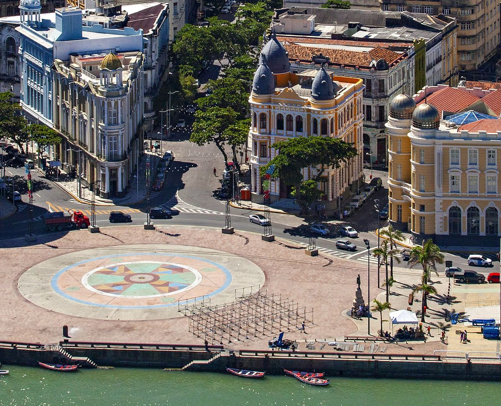
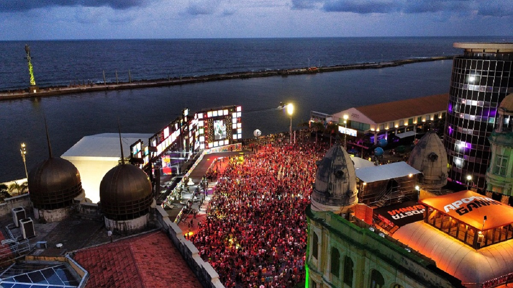

O Marco Zero de Recife
O Marco Zero, localizado no coração do Recife, é um dos pontos turísticos mais emblemáticos do Nordeste. Sendo o início das medições oficiais das estradas de Pernambuco, o local carrega consigo séculos de história.

Aqui, você pode apreciar a vista deslumbrante do encontro do Rio Capibaribe com o Oceano Atlântico, criando uma paisagem única que combina a rica herança colonial com a modernidade.
O Marco Zero é um local de encontro para eventos culturais, shows e celebrações importantes. Ele reflete a energia vibrante da cidade, onde o passado e o presente se unem.

Visitar o Marco Zero é mergulhar na cultura pernambucana, conhecer suas raízes e sentir a alma do Recife. É um convite para explorar os arredores e descobrir as belezas que esta cidade tem a oferecer.
Venha conhecer o Marco Zero e faça parte dessa história que continua a ser escrita a cada dia!